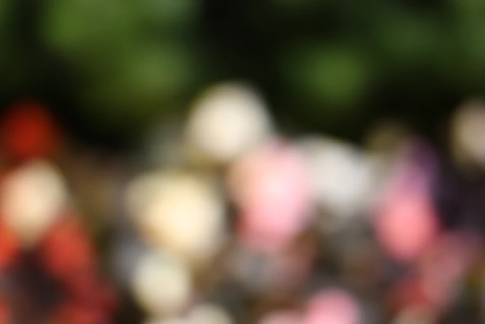
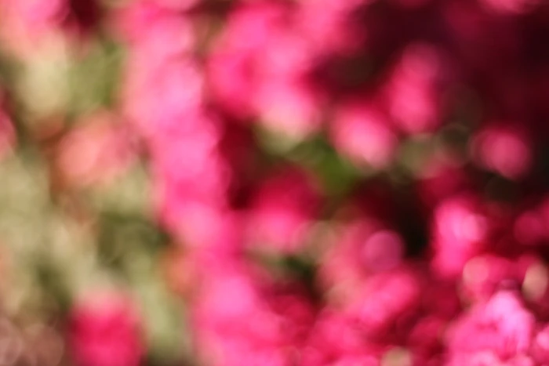
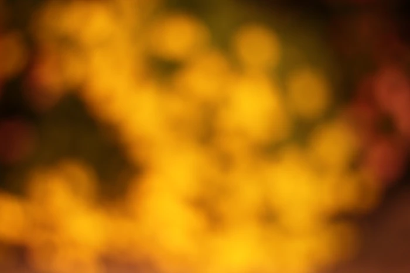
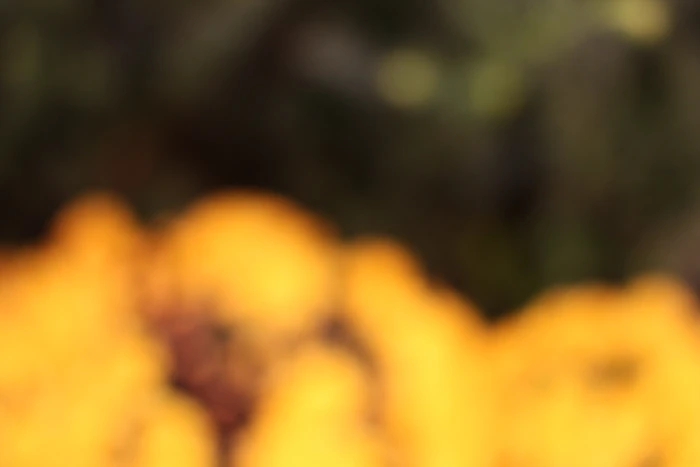

CF—PH—004 / 2008
Flowers
Flowers becoming color.
Four photographs of flowers, softened into patches of pink, yellow, green, and white.








CF—PH—004 / 2008
Flowers becoming color.
Four photographs of flowers, softened into patches of pink, yellow, green, and white.



